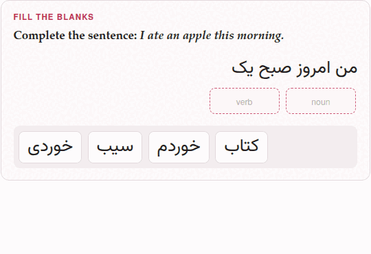
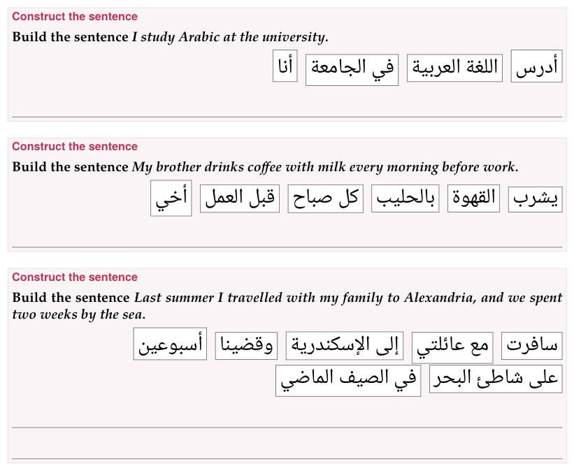

Placement: blanks, order, sentences
In a placement exercise the learner moves blocks — words, chunks, whole sentences — into their places. Three types share the machinery:
| Type | The blocks go… | Rows |
|---|---|---|
fill-blanks | into the blanks of a sentence | - [name] word, - [ ] distractor |
order-sentences | into order, one under another | - [1] first sentence, - [2] … |
construct-sentence | into order, in a line that makes a sentence | - [1] first word, - [2] … |
1. Moving the blocks#
There are four ways to move a block:
- drag it to where it goes — into a blank, or, in an ordering exercise, onto the block it should stand beside (on that block’s first half it goes before it, on its second half after it);
- in a fill-in, click the blank, then the block: the blank’s cloud (below);
- tap it, then tap where it goes — a blank, or the row of spare blocks. A tapped block is marked as picked; tap it again to put it down. From the keyboard, Tab reaches a block and Enter or Space picks it and places it. A blank clicked while a block is picked takes that block, and opens no cloud. In an ordering exercise a picked block tapped onto its line goes to the end of the line, which is rarely where it belongs: use the arrows there;
- in an ordering exercise, its arrows (below).
A blank holds one block: a block dropped on a full blank sends the one that was there back to the row of spare blocks, and a block taken out of a blank goes back there too when you drop it, or tap it, on that row.
A blank’s cloud: the blank first, then the word. Click (or tap) a blank, and a cloud opens under the sentence with a copy of every block the row of spare blocks holds; click one, and it goes into that blank. Click a filled blank to put another block there — the one it held goes back to the row — or to Empty this blank. A click anywhere else, or Escape, puts the cloud away. From the keyboard, Enter or Space on a blank opens its cloud, its first block focused, and Enter puts the focused block in. A matching exercise’s boxes work the same way (Matching).
In the mobile interface the cloud is the only way to fill a blank. The row of spare blocks stays where it is, to show what is left; its blocks are no longer picked up or dragged there (Browser and Mobile).
Every block of an ordering exercise carries two arrows, and each moves it one place: ↑ and ↓ in a list of sentences, ← and → in a line of words — and the other way round where that line runs right to left, so an arrow always points where the block will go. The block at either end has the arrow it cannot use dimmed. Tab reaches the arrows, and Space or Enter presses them. They are there because dragging is what a mouse does well and a finger does badly: a phone reports a drag as a drag only sometimes.
Where the pointer is a finger, dragging an ordering exercise’s blocks starts turned off, and the arrows alone move them. That is a guess about the machine, so each such exercise has a switch in its head — ✥ dragging on / ✥ dragging off — which says which it is and changes it, for every ordering exercise on every page that browser opens afterwards (in a private window, for as long as the page is open). The switch governs dragging and tap-to-place; the arrows are always there. A fill-in exercise has no arrows, has no switch, and can always be dragged.
2. Fill the blanks#
What it is for: a word in its context — a verb’s ending, a preposition, an article, the word a sentence needs.
:::exercise fill-blanksprompt: …text: the sentence, with each blank as [[its name]]- [its name] the word that goes there- [ ] a distractor:::text: is the sentence, and each blank in it is a name in double brackets. Each blank’s row gives its word: - [verb] read fills [[verb]]. Rows marked [ ] are distractors: blocks that fit no blank. The name is anything without a bracket in it; every blank needs a row that names it, and every named row a blank.
Give each blank a name of its own, and one row. The parser checks only that the names in the sentence and the names on the rows are the same names; it does not count them, so a name used twice shows no error. Two blanks of one name share a single block, and the exercise can never be marked right; of two rows naming one blank, only the last is its answer, and the other is left over as a distractor.
A blank may sit inside a target-language mark, so a sentence of the language being learned is written as one sentence: text: [من امروز صبح یک [[noun]] [[verb]]]{tl}. The mark is spread over the pieces round each blank when the document is read, and every renderer then sees marks it knows. A blank at the very start is written the same way — text: [[[who]] کتاب را خواند.]{tl}: the first bracket opens the mark and [[who]] is the blank.
Such a sentence is laid out in its own language’s direction, on the page and on paper, with no content-direction needed: a sentence that is the target’s throughout — every run of it marked, or nothing in it but the target’s own script — runs the target’s way, and the blanks fall where they are read. In Persian, a blank after a word is to its left. A sentence that mixes languages is left as it is, and so is an exercise that sets content-direction itself.
:::exercise fill-blanksprompt: Complete the sentence: *I ate an apple this morning.*text: [من امروز صبح یک [[noun]] [[verb]]]{tl}- [noun] سیب- [verb] خوردم- [ ] خوردی- [ ] کتابexplanation-correct: سیب *sib*, an apple; with من *man*, I, the verb ends in *-am*: خوردم.explanation-incorrect: With من *man*, I, the verb ends in *-am* — خوردم; خوردی is *you ate*.:::target: de:::exercise fill-blanksprompt: Complete the sentence.text: [Ich [[verb]] jeden Tag mit dem Bus [[prep]] Arbeit.]{tl}- [verb] [fahre]{tl}- [prep] [zur]{tl}- [ ] [fährst]{tl}- [ ] [zum]{tl}explanation-correct: [ich fahre]{tl}; and [zur]{tl} is [zu der]{tl}, because [Arbeit]{tl} is feminine.:::The sentence need not be in the target language: text: I [[verb]] the [[noun]]. works as well, with the blocks in whatever language you like.
On the page. The sentence shows a box for each blank, and under it the row of blocks — the answers and the distractors, shuffled afresh each time the page opens. An empty box shows the blank’s name, faintly: the name is a hint the learner reads, so [[verb]] says that a verb goes there, and the form’s blank1, blank2 say nothing at all. Check exercises marks each blank: ✓ where it holds its own word, ✕ where it holds another; a blank left empty is framed red and still shows its name. The exercise is right when every blank is; a distractor left in the row counts for nothing.

On paper. The sentence with a line for each blank, right to left and flush right when the sentence is a right-to-left target’s (or when content-direction says rtl). Under it, Blocks: and every row’s word — answers and distractors alike — in the order the rows are written. The form writes the answers first, blank by blank, and the distractors after them; for a worksheet, reorder the rows in the Markdown so the answers are not given away by their order — and do it after the last time the form has had the exercise (below). (On the page the order of the rows does not matter: the blocks are shuffled.)
In the form. Sentence and blanks builds the sentence piece by piece: + Add sentence text adds a stretch of Text that stays visible (spaces and punctuation exactly as they should appear), + Add blank a blank with its Correct movable word or chunk; ↑ ↓ and Delete on each piece. Extra movable blocks (optional distractors) has + Add distractor. The form names the blanks blank1, blank2, … in the Markdown it writes.
What the form undoes#
The form writes the Markdown afresh each time it saves, from what its boxes hold, and the names of the blanks and the order of the rows are not among them. So a fill-in exercise that goes through the form — reopened with ✎ Edit and saved with Save exercise, in the editor’s preview or in a deck, or pasted with Paste markdown… — comes out with its blanks renamed blank1, blank2, … and its answers before its distractors again, and nothing says so. Give the blanks their names, and put the rows in worksheet order, in the Markdown itself, after the last edit in the form.
3. Order the sentences#
What it is for: the order of events in a story, the lines of a dialogue, the steps of an explanation.
:::exercise order-sentencesprompt: …- [1] the first sentence- [2] the second sentence- [3] …:::Each row is a sentence with its position in brackets. Positions are numbers and must all differ; they need not follow the order of the rows, nor one another — [1], [3], [7] is a valid order — but the natural way is to write the rows in the right order and number them 1, 2, 3.
target: zh:::exercise order-sentencesprompt: Put the day in order.- [1] 我早上七点起床。- [2] 然后我吃早饭。- [3] 八点我去学校。- [4] 晚上我回家。explanation-correct: *I get up at seven; then I have breakfast; at eight I go to school; in the evening I go home.*:::On the page. The sentences are shuffled each time the page opens, one under another, each with its ↑ ↓ arrows. Check exercises marks each sentence ✓ where it stands in its place and ✕ where it does not; the exercise is right when all are.
On paper. A list of the sentences, each after a bullet, moved round by one place — the second first, the first last — the same on every build, so every copy of a worksheet is alike. Nothing is printed to write a number in: the student writes one beside each sentence.
In the form. Sentences in the correct order: a Sentence for each Correct position, + Add sentence, and ↑ ↓ Delete on each. The positions are written for you, in the order the form shows.
4. Construct the sentence#
What it is for: word order — where the verb goes, where the adjective goes, how the pieces of a phrase chain together.
:::exercise construct-sentenceprompt: …answer-direction: rtl | ltr (optional)- [1] first word or chunk- [2] …:::The rows are the words or chunks of the sentence, numbered in reading order — in Persian or Arabic too: [1] is the word read first, on the right. A chunk may be several words that stay together.
answer-direction is the way the row of chunks runs, and wraps: from the right in rtl, from the left in ltr. Left out, it is the target language’s own direction, which is nearly always what you want; use it for the one answer that needs the other. It is separate from content-direction, which sets the direction of the whole activity. Older right-to-left exercises that numbered their chunks backwards, to work round an answer row that once always ran left to right, should be renumbered in reading order — the form’s Reverse order does it in one press.
target: ar:::exercise construct-sentenceprompt: Build the sentence *I study Arabic at the university.*- [1] أنا- [2] أدرس- [3] اللغة العربية- [4] في الجامعةexplanation-correct: أنا أدرس اللغة العربية في الجامعة.:::target: ja:::exercise construct-sentenceprompt: Build the sentence *I study Japanese every day.*- [1] 私は- [2] 毎日- [3] 日本語を- [4] 勉強します。explanation-correct: 私は毎日日本語を勉強します。 The verb comes last.:::On the page. The chunks are shuffled into a line that runs the answer’s way and wraps from the same side, each chunk with its two arrows. Check exercises marks each chunk ✓ in its place or ✕ out of it.
On paper — the layout made for a pen. The chunks are printed in a row, as the page shows them, each in a frame of its own, moved round by one place as the sentences of order-sentences are, and flowing the way the answer is read: a Persian or Arabic row starts at the right. Under the row are lines to write the whole sentence on, as wide as the exercise’s box, as many as it takes to hold one and a half times the sentence, and never fewer than one. TeX measures the sentence as it sets it — the chunks end to end, a space between each, in their own fonts and sizes — so the count is right at any print size and in any script. A chunk too long for a line is framed as wide as the line, and wraps inside its frame. In large print the lines are heavier and further apart.

In the form. Words or chunks in the correct order: a Word or chunk for each Correct position, + Add word or chunk, ↑ ↓ and Delete, and Reverse order, which turns the whole order round (the positions are renumbered with it) — for an answer typed in the opposite reading order. Direction of the answer (including wrapped lines) is answer-direction: Automatic (it says which way that is, right to left or left to right), Right to left, Left to right.
5. In a deck#
All three go into an exercise deck with the + Deck button every exercise has on a document’s reading view, and come back there when they are due. On the deck’s study page a placement exercise is answered the same way, and Check (or Enter) marks it; when the answer was wrong, Correct answer shows it solved underneath. The ✥ dragging switch is on the study page too. Exercises in a deck has the rest.